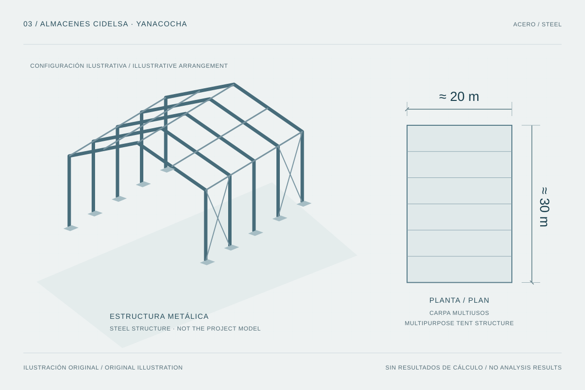

Diseño y verificación de una estructura metálica de aproximadamente 20 × 30 m, incluyendo elementos principales, conexiones y cimentaciones, con coordinación de arquitectura y MEP.

Procedencia de la figura
- Fuente
- Ilustración vectorial original creada para este portafolio a partir de la descripción aportada del proyecto.
- Herramienta
- SVG
- Fecha
- 2026-10-08
- Descripción
- Estructura metálica esquemática y planta rectangular de aproximadamente veinte por treinta metros, elaboradas como ilustración del alcance y no como modelo real de CIDELSA.
- Condición de uso
- Recurso ilustrativo del portafolio. Sustituible por material auténtico con autorización de publicación; no contiene planos ni modelos del empleador.
Contexto y alcance
El CV identifica ALMACENES CIDELSA, en Yanacocha, como una carpa multiusos de aproximadamente 20 × 30 m, desarrollada en 2024. El antecedente corresponde al diseño y verificación de una estructura de acero.
La escala en planta es un dato descriptivo del proyecto. No permite deducir por sí sola la altura, modulación, tipo de cubierta, secciones o condiciones de apoyo; estos aspectos requieren documentación específica.
Alcance de mi participación
Mi trabajo comprendió modelado y diseño estructural en acero, diseño y verificación de elementos principales, conexiones y cimentaciones, y compatibilización con arquitectura y MEP. Los entregables declarados incluyen memoria de cálculo y planos en Revit.
- Modelación y análisis de la estructura metálica.
- Diseño y verificación de elementos principales y conexiones.
- Diseño de cimentaciones y coordinación de las acciones transmitidas.
- Compatibilización y desarrollo de documentación de ingeniería.
Sistema estructural y representación
La información disponible identifica una estructura metálica y su uso como carpa multiusos. La organización de pórticos, arriostramientos, cubierta y apoyos deberá describirse a partir del modelo o planos autorizados.
La imagen de esta ficha es deliberadamente esquemática. Su planta 20 × 30 m comunica el orden de magnitud del antecedente; la elevación no reproduce la configuración real.
Modelación, conexiones y cimentaciones
El conjunto de herramientas declarado relaciona SAP2000 con el análisis global, SAFE con el estudio de cimentaciones, Mathcad con comprobaciones, IDEA StatiCa con conexiones y Revit con la documentación del proyecto.
El alcance de elementos, conexiones y cimentaciones permite presentar el trabajo como un sistema de verificaciones enlazadas: las demandas del modelo deben conservar coherencia a lo largo del recorrido de cargas. Esta descripción explica el enfoque de revisión, sin incorporar resultados no disponibles.
- Modelo global y acciones de diseño.
- Verificación de elementos y compatibilidad de las conexiones.
- Transferencia de reacciones a apoyos y cimentaciones.
- Correspondencia entre comprobaciones, memoria y planos.
Coordinación y entregables
La compatibilización con arquitectura y MEP figura expresamente en el CV. Su alcance reúne la coordinación de la geometría estructural con los requerimientos de uso y de las otras disciplinas.
Los planos en Revit y la memoria de cálculo forman parte de los entregables declarados. No se publica documentación reservada ni se atribuye autoría exclusiva de la totalidad del proyecto.
Herramientas y referencias de diseño
Herramientas declaradas: SAP2000, SAFE, Mathcad, IDEA StatiCa y Revit. Las referencias normativas indicadas en el CV son RNE y AISC.
No se asignan ediciones, resistencias de materiales, combinaciones de carga ni capacidades resistentes sin acceso a la memoria correspondiente. Los resultados cuantitativos podrán incorporarse sólo con evidencia y autorización.
Desafíos generales de ingeniería
El diseño de estructuras metálicas de este tipo requiere interpretar conjuntamente estabilidad, elementos, conexiones y apoyos. La coordinación entre modelo y documentación es especialmente relevante cuando los requerimientos de espacio y uso condicionan la solución.
- Conservar continuidad en el recorrido de cargas.
- Revisar las interfaces entre elementos, conexiones y cimentaciones.
- Documentar los supuestos que permiten interpretar cada verificación.
Procedencia y material pendiente
El CV y la información complementaria aportada por Sergio Ambrosio sustentan el nombre del antecedente, el año, el uso, las dimensiones generales y la participación publicada. El CV no vincula expresamente este proyecto con un empleador concreto, por lo que esa atribución se mantiene pendiente.
La ficha describe mi participación individual en un proyecto profesional; la atribución empresarial se completará con la documentación correspondiente.
- Vista autorizada del modelo y esquema de configuración resistente.
- Detalles publicables de conexiones y cimentaciones.
- Extractos de la memoria con unidades, criterios y revisión identificados.
- Confirmación del empleador, titular del proyecto y permisos sobre modelos, planos e imágenes.
Fuentes y referencias
- CV y actualización profesional proporcionados por Sergio Ambrosio